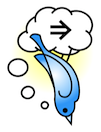

You can navigate to related events and topics in the pane on the left. Click on the
"Oh yeah?" buttons to see where these links came from.
|  |
A demo of real-time semantic search by Joshua Shinavier, Zhenning Shangguan, and Jin Guang
Zheng
|
Close 
Below is the provenance of the information
you've just clicked on.
This provenance takes the form of Twitter messages which use semantic
nanoformats.
The links you tweet allow users to navigate to other interesting
resources, and they also define the stream of tweets you see for a
given resource.
A little semantics goes a long way!
The "Oh yeah?" feature is motivated by Tim Berners-Lee's UI design issues for the Web.
The "Oh yeah?" feature is motivated by Tim Berners-Lee's UI design issues for the Web.